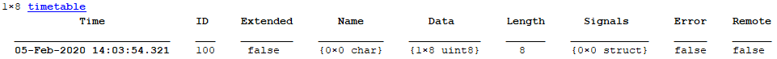
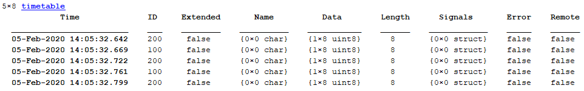
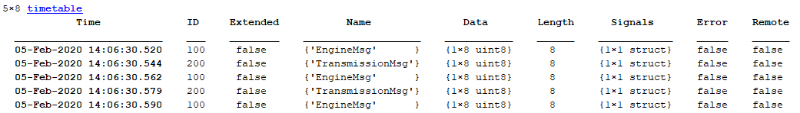

read
Read messages from CAN channel
Add-On Required: This feature requires the MATLAB Support Package for Arduino Hardware add-on.
Description
Examples
Read CAN Messages
Read messages as a timetable.
arduinoObj = arduino('COM24', 'Uno', 'Libraries', 'CAN'); ch = canChannel(arduinoObj,"Sparkfun CAN-Bus Shield", "BusSpeed", 500e3); read(ch)
The output message timetable

Read Specified Number of CAN Messages
Read messages as a timetable.
arduinoObj = arduino('COM24', 'Uno', 'Libraries', 'CAN'); ch = canChannel(arduinoObj,"Sparkfun CAN-Bus Shield", "BusSpeed", 500e3); read(ch,5)
The output message timetable

Use database to see the 'Name' field populated in the output message timetable.
db = canDatabase(demoVNT_CANdbFiles.dbc); ch.Database = db; read(ch,5)

Input Arguments
Output Arguments
Version History
Introduced in R2020a